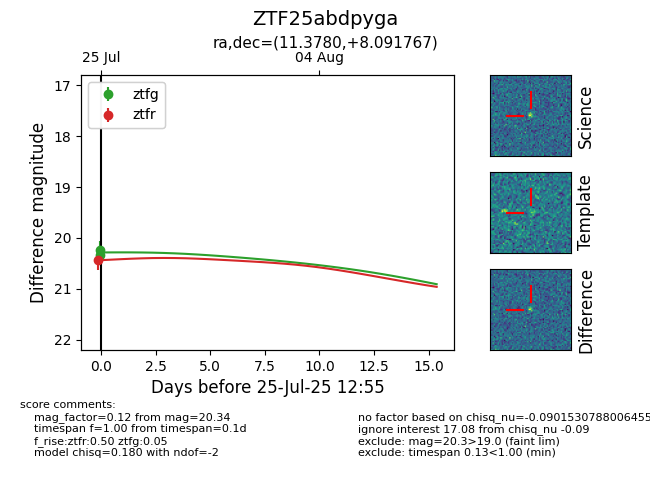

Target ZTF25abdpyga at 2025-07-25 12:55, see:
FINK: fink-portal.org/ZTF25abdpyga
Lasair: lasair-ztf.lsst.ac.uk/objects/ZTF25abdpyga
ALeRCE: alerce.online/object/ZTF25abdpyga
alt names
ZTF25abdpyga (ztf,fink)
coordinates:
equatorial (ra, dec) = (11.3780,+8.09177)
galactic (l, b) = (120.3901,-54.75073)
photometry
last ztfg=20.34, ztfr=20.44
2 ztfg, 1 ztfr detections
